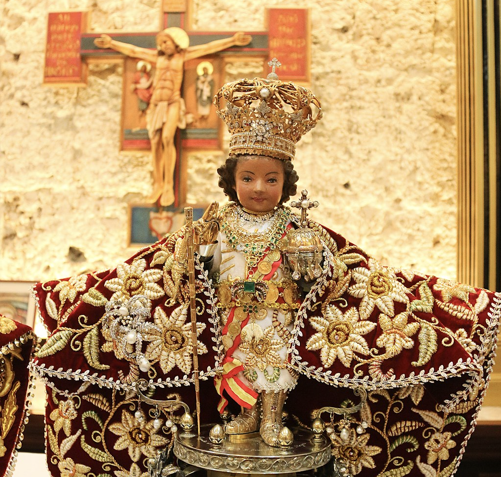

Santo Niño de Cebu
DESCRIPTION: The Santo Niño de Cebú is a Roman Catholic title of the Child Jesus associated with a religious image of the Christ Child widely venerated as miraculous by Filipino Catholics. It is the oldest Christian artifact in the Philippines, originally a gift from the Spaniard Conquistador Ferdinand Magellan to Rajah Humabon (baptized as Carlos) and his wife and chief consort, Hara Humamay (baptized as Juana) on account of their Christian baptism in 1521.